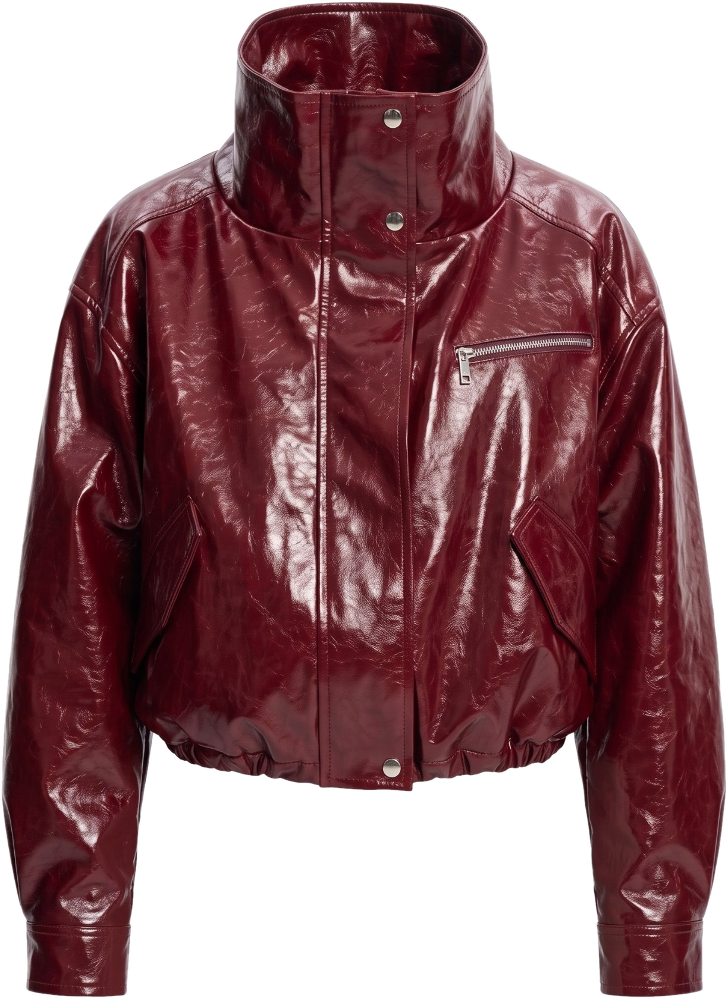
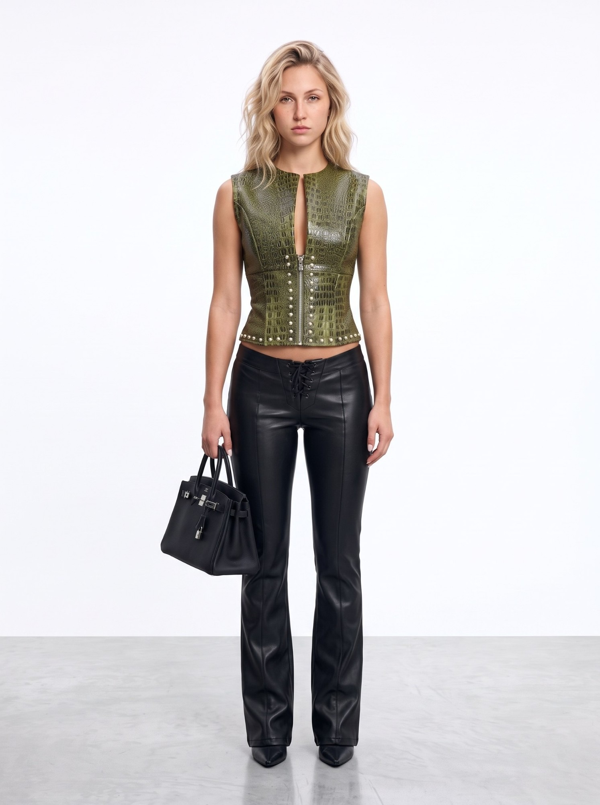
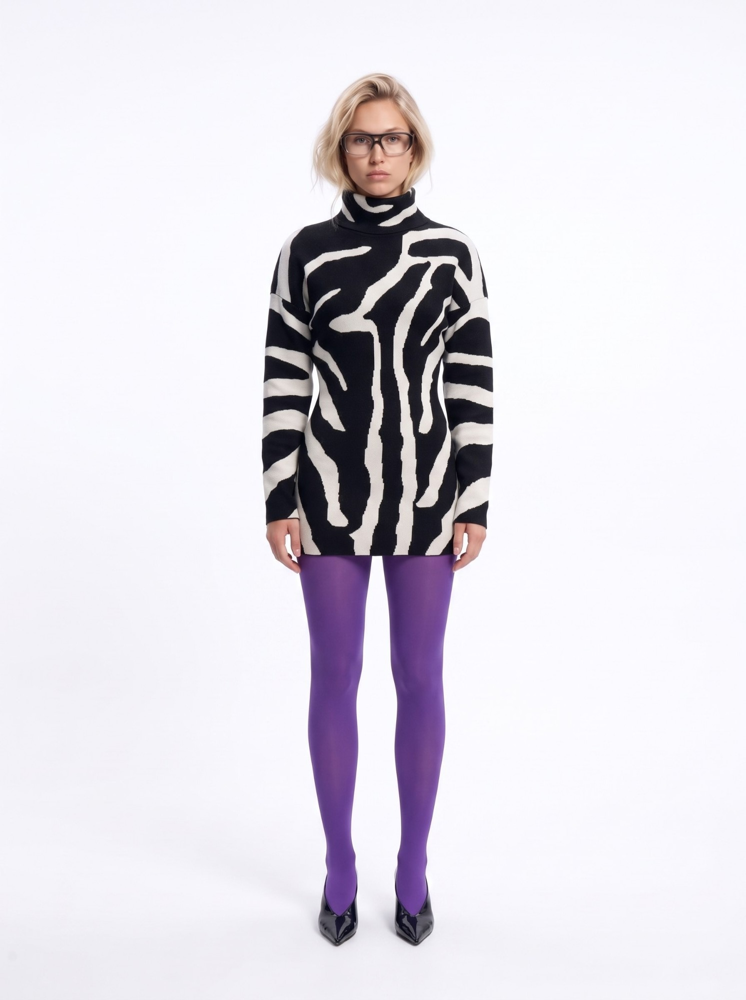

MIRRO®
Перед покупкой — 01/05
Хватит
покупать
зря
примеряй до того, как купишь
листай

MIRRO®
Шаг 01 · Нашла вещь — 02/05
хочу!
Увидела вещь
в магазине?
Сфоткай её или сохрани фото

MIRRO®
Шаг 02 · Примерка — 03/05
Примерь
Увидишь, как сядет именно на тебе — без примерочной

та самая курткаMIRRO®
Шаг 03 · Проверка — 04/05
Впишется
в гардероб?
Собери образ с вещами, которые уже есть


▸ 01A▸ 02A▸ 03A
Попробуй — 05/05
MIRRO
покупай только то,
что реально носишь
@Mirro_wardrobe_botссылка в шапке профиля